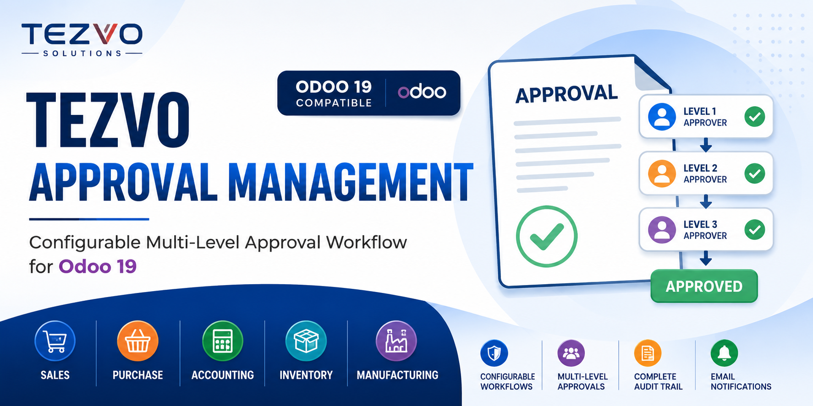
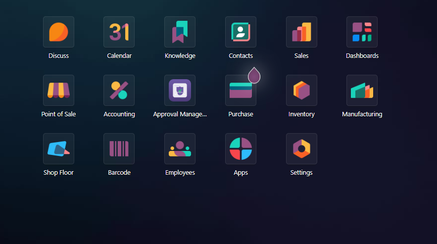
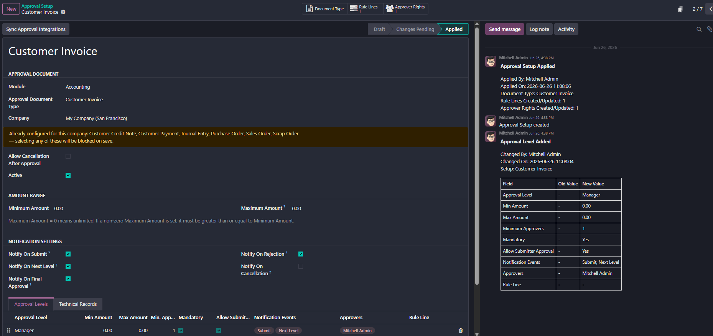
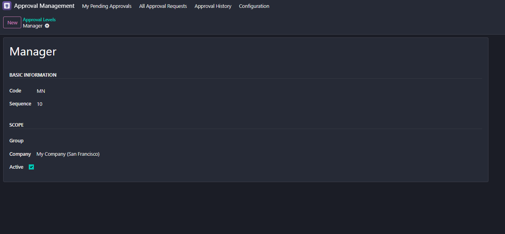
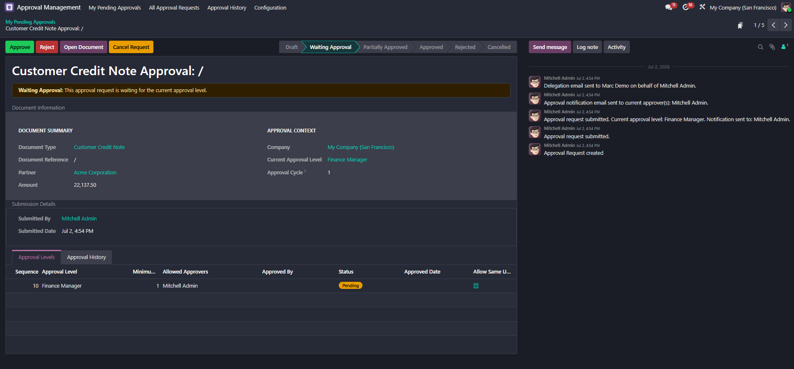
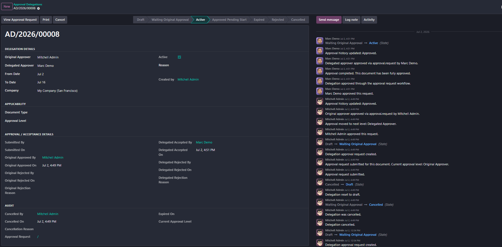
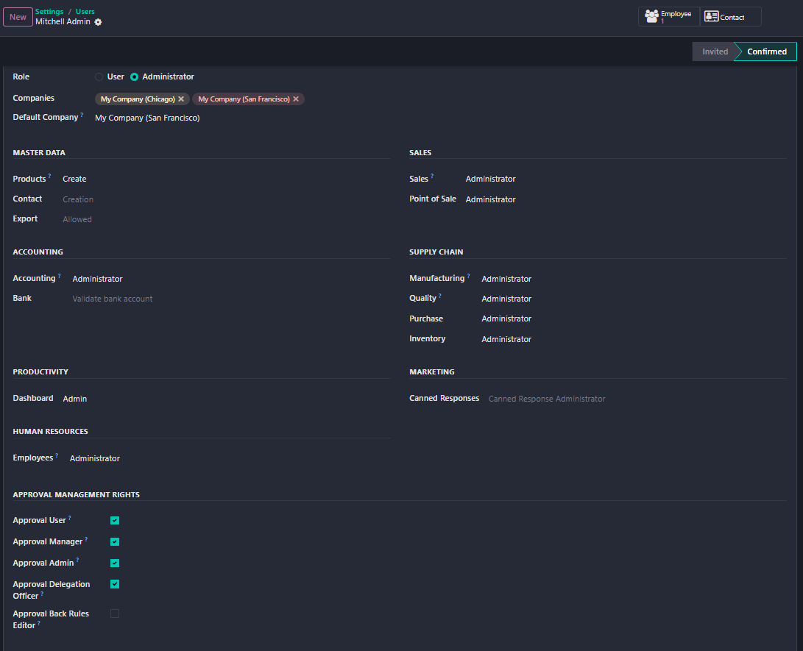

Configurable Multi-Level Approval Workflow for Odoo 19
Tezvo Approval Management is a configurable multi-level approval workflow engine for Odoo 19. It helps organizations manage approvals across Sales, Purchase, Accounting, Inventory, and Manufacturing documents using approval levels, amount thresholds, user rights, delegation, notifications, and audit history.
Odoo 19 Compatible OPL-1
Create flexible approval chains across document types with multiple stages and approval routes.
Route requests automatically according to document value and approval level limits.
Define approval levels in sequence so each request follows the correct order of review.
Set minimum approver counts per level to enforce approval accountability and business rules.
Configure approval rules and rights by company to reflect internal control and governance needs.
Allow approvers to delegate their authority for a defined period when unavailable.
Track all approval decisions, transitions, and activity in a clear approval history log.
Send notifications for submission, approval, rejection, cancellation, and level changes.
Maintain approval activity in chatter for easy review directly from the document.
Use dedicated approval groups and user rights to control who can view, modify, and manage approval setup.
Protect critical approval setup and back-rule records so only authorized users can make changes.
Approvers can delegate approval authority to another user for a defined period when they are on leave or temporarily unavailable.
Every approval action is tracked so teams can review approval activity with confidence.
The module provides focused user access through dedicated approval groups and configurable rights.
Approval rights can be managed directly from the user form. Critical approval configuration records are protected, and only authorized users can amend approval setup and back-rule records.





